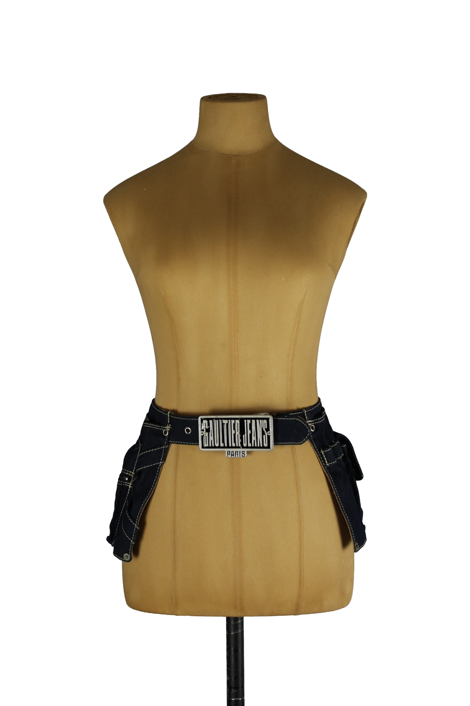

1 / 12Aus dem kuratierten Archiv von Disorder119. Dieser seltene Utility-Belt aus der Linie Jean Paul Gaultier Jeans stammt aus der experimentellen Phase der späten 1990er- bis frühen 2000er-Jahre, in der Gaultier Accessoires bewusst als eigenständige Kleidungsstücke konzipierte. Gefertigt aus schwerem Dark-Denim verbindet der Gürtel klassische Jeansverarbeitung mit funktionalen und skulpturalen Elementen. Beidseitig angebrachte Cargo-Taschen mit Druckknöpfen und markanten Kontrastnähten verleihen dem Piece einen utilitären, beinahe modularen Charakter. Zentral sitzt die ikonische Metallschließe mit geprägtem „Gaultier Jeans Paris“-Schriftzug – ein klares Archivmerkmal und starkes Sammlerdetail. Solche Gürtel wurden nur in sehr begrenzten Stückzahlen produziert und sind heute entsprechend selten. Tragbar über Hosen, Röcken oder direkt auf dem Körper gestylt, steht dieses Piece exemplarisch für Gaultiers spielerischen Umgang mit Funktion, Körper und Mode als Konstruktion. Details: Marke: Jean Paul Gaultier Jeans Farbe: Dunkelblau Größe: One Size Passform: Verstellbar Verschluss: Metallschließe Material: Denim Herstellungsland: Nicht angegeben Fotografie & Passform: Das Kleidungsstück wurde auf unserer Standard-Schneiderpuppe fotografiert, die wir zur konsistenten Darstellung aller Kleidungsstücke verwenden. Maße der Schneiderpuppe: Brustumfang 89 cm Taillenumfang 66 cm Hüftumfang 89 cm Schulterbreite 38 cm Zustand: Sehr guter gebrauchter Zustand mit leichten, altersbedingten Tragespuren. Keine strukturellen Schäden. Rechtliche Hinweise: Verkauf als gebrauchtes Kleidungsstück. Die Beschreibung erfolgt nach bestem Wissen und Gewissen. Farbnuancen und Oberflächenwirkungen können aufgrund von Lichtverhältnissen bei der Fotografie sowie unterschiedlicher Bildschirmdarstellungen leicht vom Original abweichen. Disorder119 steht für sorgfältig kuratierte Designerstücke mit Fokus auf Authentizität, Qualität und zeitlose Relevanz.
Disorder119 · Kuratiertes Archiv für Designer-, Vintage- und Contemporary-Mode. Jedes Stück wird einzeln ausgewählt, fotografiert und beschrieben.